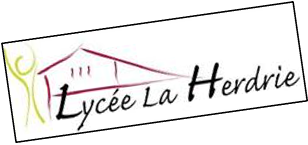

Moi c'est Laurine TURTUREAN, j'ai 21 ans, je suis étudiante en Bachelor 3 webmarketing & social media à l'école Mydigitalschool à Nantes.
Je suis à la recherche d'une entreprise afin de réaliser mon stage alterné dans le domaine de la communication, community manager. Cela me permetterait de réaliser des missions concrètes et en apprendre encore davantage sur le métier.
Mon rythme d'alternance : 3 jours en formation / 7 jours en entreprise
Permis B, véhiculée
Marketing web et digital, rédaction web, SEO/SEA,Wordpress, développement web, communication digitale et social ads, design graphique , vidéo….
Certifiée acteur PRAP IBC (Prévention des Risques liés à l’activité Physique, Industrie, Bâtiment, Commerce)